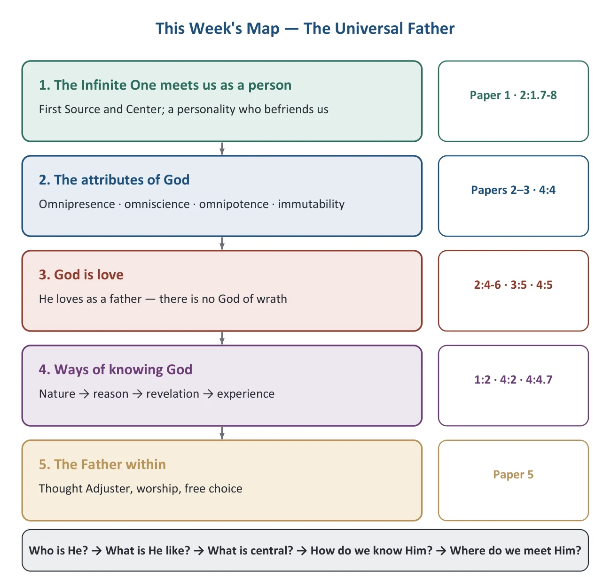
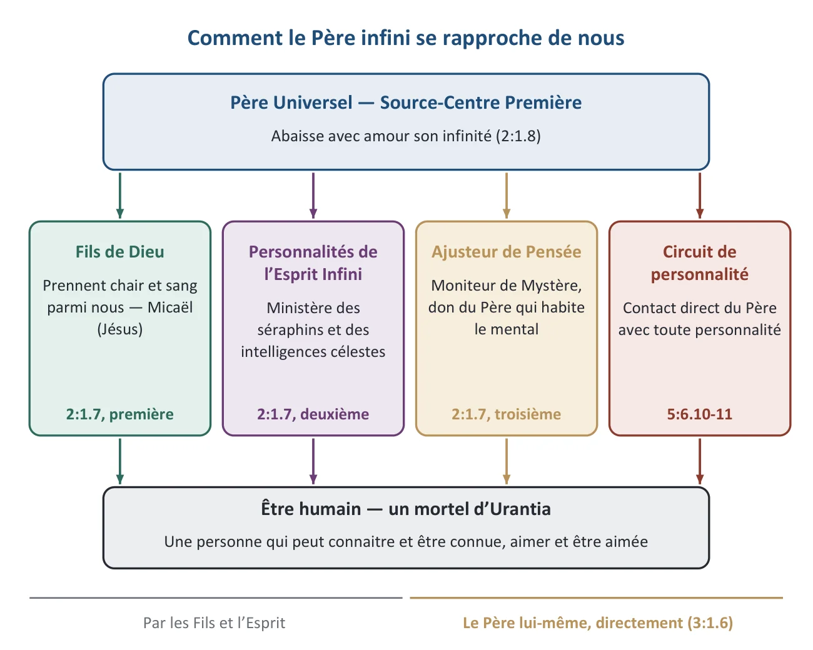
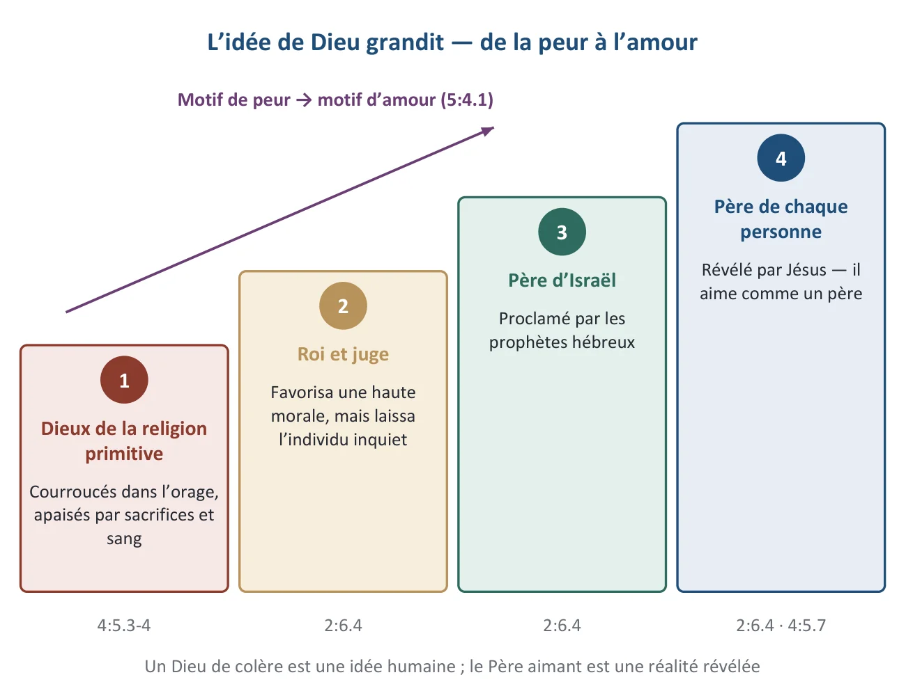
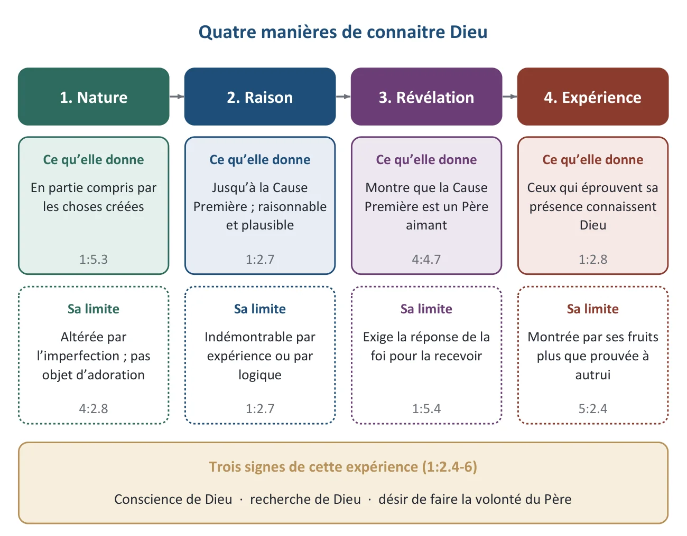

Le Père Universel — Qui est Dieu ?
Lecture : Fascicule 1 · Fascicule 2 · Fascicule 3 · Fascicule 4 · Fascicule 5

Les cinq premiers fascicules du Livre d’Urantia présentent Dieu comme Celui qui est infini et qui est pourtant une personne capable d’entrer en communion avec nous — un Père. Dieu est présent partout, connait toutes choses et ne change pas, mais l’amour guide chacun de ces attributs, et il n’y a pas de Dieu de colère qu’il faudrait apaiser par des sacrifices. Ce Dieu se connait par l’expérience plus que par la preuve, et il vit déjà en chaque personne par l’esprit qu’il a envoyé.
Récit d’ouverture
Demandez à une petite fille de cinq ans comment est son père. Elle ne sait guère ce qu’il fait au travail ni ce qu’il possède. Pourtant, elle répond sans une seconde d’hésitation : « Mon papa m’aime. » Elle ne comprend pas pleinement son père, mais elle le connait.
Une personne qui se tient devant Dieu ressemble beaucoup à cette enfant. Les fascicules 1 à 5 sont remplis de grands mots — infini, éternel, absolu — et ce n’est pas grave de ne pas tous les saisir. Le Conseiller Divin qui a écrit ces cinq fascicules veut, au bout du compte, dire une seule phrase : Dieu est votre Père.
Cette semaine, nous examinons pas à pas comment est ce Père et comment nous pouvons parvenir à le connaitre.
1. L’Infini nous rencontre en tant que personne
La Source-Centre Première
Le nom que le Livre d’Urantia emploie le plus souvent pour Dieu est « le Père Universel », et le nom le plus largement utilisé dans l’univers est « la Source-Centre Première ». Tout vient de lui, et tout tourne autour de lui.
LE Père Universel est le Dieu de toute la création, la Source-Centre Première de toutes les choses et de tous les êtres. Pensez d’abord à Dieu comme à un créateur, puis comme à un contrôleur, et enfin comme à un soutien infini.1:0.1
Créateur, contrôleur, soutien : Dieu a fait l’univers, il le gouverne et il le maintient dans l’existence aujourd’hui encore. Pourtant, le fascicule 1 n’accorde pas beaucoup d’importance au nom lui-même.
Le nom qu’on lui donne a peu d’importance. L’essentiel est de le connaitre et d’aspirer à être semblable à lui.1:1.6
Dieu est une personne
Dire que Dieu est infini peut facilement donner l’impression d’une force froide ou d’une vaste loi. Le fascicule 1 prévient d’abord ce malentendu.
Ne permettez pas à la grandeur de Dieu, à son infinité, d’obscurcir ou d’éclipser sa personnalité. « Celui qui a dessiné l’oreille n’entendra-t-il pas ? Celui qui a formé l’œil ne verra-t-il pas ? » Le Père Universel est le summum de la personnalité divine.1:5.1
La personnalité est le mot clé de cette semaine. Dire que Dieu est une personne ne signifie pas qu’il a un corps comme le nôtre. Cela signifie qu’il est conscient de lui-même, qu’il veut et se propose des desseins, et qu’il nous connait et peut partager une communion avec nous.
Bien que Dieu soit un pouvoir éternel, une présence majestueuse, un idéal transcendant et un esprit glorieux, bien qu’il soit tout cela et infiniment plus, il est néanmoins éternellement et vraiment une parfaite personnalité de Créateur, une personne qui peut « connaitre et être connue », qui peut « aimer et être aimée », et qui peut nous témoigner de l’amitié ; en même temps, vous pouvez être connu comme l’ami de Dieu, ainsi que d’autres humains l’ont été.1:5.8
La phrase s’élève d’une expression sublime à l’autre, puis pivote sur le mot « néanmoins » et aboutit à « ami ». Le fascicule 1, section 7, explique pourquoi la personnalité importe tant.
Le concept de la personnalité de la Déité facilite la communion ; il favorise une adoration intelligente ; il développe une confiance réconfortante. Entre choses non personnelles il peut y avoir interaction, mais non communion. On ne peut jouir de la relation de communion entre père et fils, comme entre Dieu et l’homme, que si tous deux sont des personnes.1:7.1
Le soleil et la terre s’attirent l’un l’autre, mais ils ne se manquent pas. Parce que Dieu et l’homme sont tous deux des personnes, quelque chose de plus que l’attraction est possible entre eux : la communion. Et cette communion n’est pas un chemin sur lequel le moi disparait.
L’homme ne réalise pas son union avec Dieu comme une goutte d’eau pourrait trouver son unité avec l’océan. L’homme atteint l’union divine par une communion spirituelle réciproque et progressive, par des rapports de personnalité avec un Dieu personnel, par l’accession toujours croissante à la nature divine en se conformant de tout cœur et intelligemment à la volonté divine.1:7.2
Quand une goutte d’eau se fond dans la mer, la goutte n’est plus. L’unité que décrit le Livre d’Urantia est différente. Chaque personne reste elle-même jusqu’au bout, en devenant de plus en plus semblable au Père.
Comment l’Infini se rapproche
Mais comment l’Infini peut-il entrer en communion avec un être humain fini ? Le fascicule 2 répond que Dieu, par amour, abaisse sa propre infinité.
De cette manière et de beaucoup d’autres, par des moyens qui vous sont inconnus et dépassent entièrement la compréhension finie, le Père du Paradis abaisse volontairement son infinité avec amour, la modifie, la dilue et l’atténue en vue de pouvoir se rapprocher du mental fini de ses enfants créés.2:1.8
« De cette manière » renvoie aux trois voies nommées dans le paragraphe qui précède.
Premièrement, la personnalité des Fils Paradisiaques de Dieu, qui, bien que parfaits en divinité, participent souvent de la nature de la chair et du sang mêmes des races planétaires, devenant l’un de vous et un avec vous. … Et deuxièmement, il y a les personnalités de l’Esprit Infini, les divers ordres des armées séraphiques et d’autres intelligences célestes qui approchent les êtres matériels d’humble origine, leur apportent leur ministère et les servent de tant de manières. Et troisièmement, il y a les Moniteurs impersonnels de Mystère, les Ajusteurs de Pensée, le don effectif du grand Dieu lui-même, envoyés pour habiter des êtres tels que les humains d’Urantia, et cela sans avertissement ni explication.2:1.7
Le fascicule 5 en ajoute une autre : le circuit de personnalité, qui relie directement chaque personnalité au Père (5:6.10). La figure ci-dessous rassemble ces voies en une seule image.

Mots nouveaux
- Source-Centre Première : le nom le plus couramment employé pour Dieu dans tout l’univers. Il signifie que toutes choses viennent de lui et gravitent autour de lui.
- Personnalité : ce qui rend un être conscient de soi, capable de choisir et capable de partager une communion avec d’autres. Seul le Père Universel confère la personnalité (5:6.4).
- Fils Créateur : un Fils de Dieu qui fait et gouverne un univers local. Micaël de Nébadon, le Fils Créateur de notre univers, est venu dans ce monde en tant que Jésus.
- Fils Éternel et Esprit Infini : les deux Personnes qui, avec le Père Universel, forment la Trinité du Paradis. Nous les rencontrons pendant la semaine 3.
2. Les attributs de Dieu — présent partout, connaissant tout, immuable
Les fascicules 2 et 3 passent en revue un à un les attributs de Dieu — les traits qui montrent quelle sorte d’Être est Dieu. Pour chaque mot, le Livre d’Urantia explique aussi ce qu’il signifie pour notre relation avec lui.

Présent partout
L’aptitude du Père Universel à être simultanément présent partout constitue son omniprésence. Dieu seul peut se trouver au même instant en deux endroits ou en une multitude d’endroits.3:1.1
Si Dieu est partout, pourquoi certains le sentent-ils proche et d’autres lointain ? Le fascicule 3 répond que la différence est de notre côté, non du sien.
Les fluctuations de la présence du Père ne sont pas dues à la variabilité de Dieu. Le Père ne se retire pas dans la solitude parce qu’il a été offensé. Son affection n’est pas aliénée du fait qu’une créature a mal agi. Ses enfants ont reçu le pouvoir de choisir en ce qui Le concerne. Ce sont donc ses enfants qui, dans l’exercice de ce choix, déterminent directement le degré et les limitations de l’influence divine du Père dans leur propre cœur et leur propre âme.3:1.12
La lumière du soleil tombe également sur chaque maison, mais la clarté d’une pièce dépend de la largeur à laquelle ses fenêtres sont ouvertes. Il en va ainsi de la présence de Dieu.
Connaissant tout
Que Dieu sache tout peut faire penser à un œil qui surveille et enregistre. Le fascicule 3 nous invite plutôt à l’entendre comme une consolation.
Et tout être humain devrait être réellement consolé en comprenant qu’« il connait votre structure, il se souvient que vous êtes poussière ». Parlant du Dieu vivant, Jésus a dit : « Votre Père sait ce dont vous avez besoin avant même que vous le lui demandiez. »3:3.2
Celui qui nous connait complètement ne nous connait pas pour nous condamner, mais pour se souvenir de notre faiblesse. Qu’advient-il alors de la liberté humaine ?
Mais, même si Dieu connaissait d’avance les actes de libre arbitre de ses enfants, sa prescience n’abrogerait nullement leur liberté. Une chose est certaine : Dieu n’est jamais pris au dépourvu.3:3.4
Tout-puissant
L’omnipotence signifie qu’il n’y a rien que Dieu ne puisse faire. Pourtant, le fascicule 3 précise aussi ce que l’omnipotence ne signifie pas.
L’omnipotence n’implique pas le pouvoir de faire ce qui est infaisable, des actes non divins. L’omniscience n’implique pas non plus la connaissance de ce qui est inconnaissable.3:3.5
Le pouvoir de Dieu n’est limité que par sa propre nature, sa volonté et sa loi (3:2.11-14). Qu’il n’agisse jamais contre l’amour n’est pas une faiblesse ; c’est simplement Dieu qui est Dieu.
Immuable
Aucune chose n’est nouvelle pour Dieu et nul évènement cosmique n’arrive par surprise ; Dieu habite le cercle de l’éternité. Ses jours n’ont ni commencement ni fin. Pour Dieu, il n’y a ni passé, ni présent, ni futur. La totalité du temps est présente à tout instant.2:1.5
Immuable ne veut pas dire figé. Le fascicule 4 le dit clairement.
Et Dieu peut modifier ainsi les manifestations de son absoluité parce que l’invariance divine n’implique pas l’immobilité. Dieu a de la volonté, il est volonté.4:4.2
Les desseins de Dieu ne changent jamais, mais les manières dont il les réalise sont vivantes et attentives. L’amour d’un bon parent reste le même, tandis que la manière de montrer cet amour change à mesure que l’enfant grandit.
| Attribut | Sens | Ce que cela signifie pour nous | Référence |
|---|---|---|---|
| Omniprésence | Présent partout à la fois | Sa proximité ressentie dépend de mon choix | 3:1.1, 3:1.12 |
| Omniscience | Connait toutes choses | Consolation : il se souvient de ma faiblesse, et ma liberté reste intacte | 3:3.2-4 |
| Omnipotence | Détient tout pouvoir | Ne fait jamais ce qui est contraire à Dieu | 3:2.11-14, 3:3.5 |
| Immutabilité | Dessein éternellement le même | Non pas rigide, mais une volonté vivante | 2:1.5, 4:4.2 |
| Amour | La nature qui guide chaque attribut | Il aime en tant que père | 2:5.1, 2:6.4 |
Quand l’Infini nous dépasse
Suivre les attributs l’un après l’autre peut alourdir la tête. Pour un tel lecteur, le fascicule 3 laisse une seule phrase, libératrice.
Les hommes mortels n’ont absolument pas la possibilité de connaitre l’infinitude du Père céleste. Le mental fini ne saurait concevoir entièrement un fait absolu ou une vérité absolue de cet ordre. Mais les mêmes êtres humains finis peuvent effectivement ressentir — littéralement éprouver — le plein impact non affaibli de cet AMOUR infini du Père.3:4.6
Repensez à l’enfant du récit d’ouverture. Tout comprendre d’un père et être aimé de lui sont deux choses différentes. La première prendrait toute une vie sans être achevée ; la seconde peut commencer aujourd’hui.
Dissiper un malentendu
Un malentendu courant : puisque Dieu est tout-puissant, chaque accident ou malheur qui m’arrive doit avoir été envoyé directement par lui. Ce que dit le Livre d’Urantia : le Père gouverne l’univers par ses Fils et de nombreuses autres personnalités (3:5.2), et sur les mondes évolutionnaires il arrive beaucoup de choses qui ne sont pas l’acte personnel du Père (3:2.10).
Mots nouveaux
- Omniprésence : le fait d’être présent partout en même temps — le mot employé en 3:1.1.
- Omniscience et omnipotence : connaitre toutes choses et détenir tout pouvoir. Toutes deux se comprennent à l’intérieur de la nature de Dieu.
- Immutabilité : le dessein et la nature de Dieu ne changent pas. C’est autre chose que l’immobilité, l’incapacité de se mouvoir ou d’agir.
3. Dieu est amour — il n’y a pas de Dieu de colère
L’amour guide chaque attribut
Si un seul élément pouvait rester sur la liste des attributs de Dieu, le Livre d’Urantia garderait l’amour.
« Dieu est amour. » Son unique attitude personnelle à l’égard des affaires de l’univers est donc toujours une réaction d’affection divine. Le Père nous aime suffisamment pour nous conférer sa vie.2:5.1
Personne n’a eu à le persuader de cet amour.
Dieu est spontanément bienveillant, compatissant par nature et perpétuellement miséricordieux. Il n’est jamais nécessaire d’avoir recours à l’intervention d’une quelconque influence auprès du Père pour obtenir son affectueuse bienveillance. Le besoin des créatures est entièrement suffisant pour que le Père donne libre cours à sa tendre miséricorde et à sa grâce salvatrice. Puisque Dieu sait tout ce qui concerne ses enfants, il lui est facile de pardonner.2:4.2
Un enfant qui a de la fièvre n’a rien à offrir pour recevoir les soins de sa mère. Être malade est une raison suffisante. Le fascicule 2 nous dit aussi qui a révélé cet amour le plus clairement.
Le concept de Dieu en tant que roi-juge a développé un standard moral élevé et créé un peuple respectueux de la loi en tant que groupe. Pourtant, le croyant individuel est resté dans une triste position d’insécurité en ce qui concerne son statut dans le temps et l’éternité. Les derniers prophètes hébreux proclamèrent que Dieu était un Père pour Israël. Jésus révéla Dieu comme le Père de chaque être humain. … Dieu n’aime pas comme un père, mais en tant que père.2:6.4
« Comme un père » est une comparaison ; « en tant que père » est un fait. Le nom de Père n’est pas une figure de style, mais la relation réelle elle-même. Comment une personne répond-elle en découvrant cet amour ?
Lorsque vous méditez sur la nature aimante de Dieu, il n’y a qu’une seule réaction de personnalité raisonnable et naturelle : vous aimerez votre Auteur de plus en plus. Vous rendrez à Dieu une affection analogue à celle qu’un enfant donne à un parent terrestre.2:5.9
L’expérience d’être aimé vient avant tout commandement d’aimer. L’amour grandit en réponse à l’amour.
L’amour n’est pas de la sentimentalité
Cela ne signifie pas que l’amour de Dieu cède simplement à tous les désirs.
Mais l’amour de Dieu est une affection parentale intelligente et prévoyante. L’amour divin fonctionne en association unifiée avec la sagesse divine et avec toutes les autres caractéristiques infinies de la nature parfaite du Père Universel. Dieu est amour, mais l’amour n’est pas Dieu.2:5.10
La sagesse et la justice se tiennent aux côtés de l’amour de Dieu. Le fascicule 2 dit clairement qu’on récolte ce que l’on a semé (2:3.2). Et le fascicule 3 propose une manière de regarder les épreuves que nous traversons.
Nous faisons tous partie de la famille de Dieu ; il faut donc que nous participions quelquefois à la discipline de famille.3:2.9
Le fascicule 3 va encore plus loin et explique, à travers neuf questions, pourquoi ce monde comporte des difficultés et des incertitudes. En voici deux.
1. Le courage — la force de caractère — est-il désirable ? Alors, il faut que l’homme soit élevé dans un environnement qui l’oblige à s’attaquer à de dures épreuves et à réagir aux désappointements.3:5.6
4. La foi — l’affirmation suprême de la pensée humaine — est-elle désirable ? Alors, il faut que le mental de l’homme se retrouve dans cette situation embarrassante où il en sait toujours moins que ce qu’il peut croire.3:5.9
Le courage ne grandit pas là où il n’y a pas de danger, ni la foi là où tout est déjà connu. Les êtres de Havona, parfaits dès l’origine, ne connaissent jamais cette sorte de courage et de foi (3:5.17). Le passage nous permet de voir l’épreuve, non comme une punition, mais comme un lieu de croissance.
Il n’y a pas de Dieu de colère
Vient maintenant la phrase la plus décisive de la semaine.
Dieu n’est jamais courroucé, vindicatif, ni irrité. Il est vrai que la sagesse réfrène souvent son amour alors que la justice conditionne le rejet de sa miséricorde.2:6.7
D’où vient l’image d’une divinité qu’il faut calmer par des offrandes ? Le fascicule 4 l’appelle un vestige de la religion primitive, qui voyait dans le tonnerre et l’inondation la colère des dieux (4:5.3).
L’idée barbare d’apaiser un Dieu courroucé, de se rendre favorable un Seigneur offensé, de gagner les faveurs de la Déité par des sacrifices, des pénitences, et même en versant du sang, représente une religion totalement puérile et primitive, une philosophie indigne d’un âge éclairé par la science et la vérité. … C’est un affront à Dieu de croire, de soutenir ou d’enseigner qu’il faut verser du sang innocent pour gagner ses faveurs ou détourner une colère divine fictive.4:5.4
La figure ci-dessous retrace comment les idées humaines sur Dieu ont grandi de la peur vers l’amour. Au bout de cette route, Jésus a montré que Dieu est le Père de chaque personne.

Le Père céleste plein d’affection, dont l’esprit habite ses enfants sur terre, n’est pas une personnalité divisée — l’une de justice et l’autre de miséricorde. Il n’y a pas davantage besoin d’un médiateur pour obtenir la faveur ou le pardon du Père. … Dieu en tant que père transcende Dieu en tant que juge.2:6.6
En Dieu, la justice et la miséricorde ne se querellent pas. Il n’est pas Celui entre qui et nous quelqu’un devrait payer un prix. Et il ne prend pas non plus le péché à la légère.
Dieu aime le pécheur parce que le pécheur est une réalité de personnalité (potentiellement éternelle) … L’amour de Dieu sauve le pécheur. La loi de Dieu détruit le péché.2:6.8
L’amour se dirige vers la personne, la loi vers le péché. Les deux ne s’opposent pas.
Dissiper un malentendu
Un malentendu courant : Dieu a été irrité par le péché, et il n’a pu pardonner qu’après que quelqu’un eut versé son sang pour en payer le prix. Ce que dit le Livre d’Urantia : l’amour de Dieu n’est pas suscité par les sacrifices de ses Fils (2:5.2). La vie de Jésus sur terre n’était pas nécessaire pour gagner la faveur de Dieu, et l’enseignement selon lequel la miséricorde n’a été accordée qu’après la mort au Calvaire déforme le caractère de Dieu (4:5.6). Nous reviendrons sur le sens de la mort de Jésus pendant la semaine 12.
En regard de la Bible
La première épitre de Jean confesse que « Dieu est amour » (1 Jean 4:8). Le fascicule 2 cite la parole de Jésus selon laquelle le Père « fait lever son soleil sur les méchants et sur les bons » (Matthieu 5:45) comme preuve de l’amour de Dieu (2:5.1). Dans la parabole du fils prodigue, le père « courut se jeter à son cou et le baisa » (Luc 15:20). Le fils n’avait rien payé du tout.
4. Les manières de connaitre Dieu — la nature, la raison, la révélation et l’expérience
Comment pouvons-nous parvenir à connaitre ce Dieu ? En rassemblant les réponses dispersées dans les fascicules 1 à 5, on obtient quatre chemins.

La nature, les empreintes de Dieu
Il est naturel de penser à Dieu en regardant le ciel nocturne ou un champ de fleurs sauvages. Le fascicule 1 confirme aussi ce chemin.
C’est ainsi, en vérité, que les « choses invisibles de Dieu se comprennent partiellement par les choses qui sont faites ».1:5.3
Mais le mot « partiellement » mérite l’attention. La nature porte à la fois l’inachèvement de l’évolution et les cicatrices de la rébellion ; elle ne peut donc pas refléter Dieu parfaitement.
Les défauts apparents du monde naturel ne correspondent à aucun défaut du même ordre dans le caractère de Dieu. Ces imperfections observées représentent plutôt les temps d’arrêt inévitables dans le déroulement constant du spectacle où se dépeint l’infini.4:2.7
Non, la nature n’est pas Dieu. La nature n’est pas un objet d’adoration.4:2.8
Juger Dieu d’après les seuls tremblements de terre et les maladies, c’est comme juger un film entier sur une seule image figée.
La raison, jusqu’à la Cause Première
La raison peut nous conduire à la porte de Dieu, mais elle ne peut pas ouvrir la porte.
L’existence de Dieu ne pourra jamais être prouvée par des expériences scientifiques, ni par des déductions logiques de la raison pure. On ne peut réaliser ce qu’est Dieu que dans les domaines de l’expérience humaine. Toutefois, le vrai concept de la réalité de Dieu est raisonnable pour la logique, plausible pour la philosophie, essentiel pour la religion et indispensable pour tout espoir de survie de la personnalité.1:2.7
Que Dieu ne puisse être prouvé ne rend pas la croyance en lui déraisonnable. Cela signifie seulement que la raison seule ne peut pas nous mener jusqu’au bout.
La révélation : la Cause Première est un Père
La science, la philosophie et la religion donnent chacune à Dieu un nom différent. La révélation est ce qui unit ces noms en un seul.
Dans la science, Dieu est la Cause Première ; en religion, il est le Père universel et aimant ; en philosophie, il est l’unique être qui existe par soi-même … La révélation est toutefois nécessaire pour montrer que la Cause Première de la science et l’Unité existant en-soi de la philosophie sont le Dieu de la religion, plein de miséricorde et de bonté, et engagé à faire survivre éternellement ses enfants terrestres.4:4.7
| Point de vue | Dieu est | Ce qu’il apporte | Ce qu’il ne peut montrer à lui seul |
|---|---|---|---|
| Science | La Cause Première, la force primordiale | L’ordre et les lois de l’univers | Si cette Cause m’aime |
| Philosophie | L’idée d’unité, l’Un qui existe par lui-même | Une pensée qui relie toutes choses | S’il est Quelqu’un que nous pouvons connaitre comme un ami |
| Religion | Une personne, le Père céleste aimant | Une expérience spirituelle vivante | Confirmé par la révélation et l’expérience |
L’expérience : ceux qui connaissent Dieu l’ont rencontré
Des quatre chemins, le dernier et le plus sûr est l’expérience.
Ceux qui connaissent Dieu ont expérimenté le fait de sa présence. Ces mortels connaissant Dieu possèdent, dans leur expérience personnelle, la seule preuve positive de l’existence du Dieu vivant qu’un être humain puisse offrir à un autre.1:2.8
Cette expérience n’est pas un vague sentiment. Le fascicule 1 nomme les signes indiquant que l’esprit de Dieu est présent intérieurement.
L’actualité de l’existence de Dieu est démontrée dans l’expérience humaine par la divine présence intérieure, le Moniteur d’esprit envoyé du Paradis pour vivre dans le mental mortel de l’homme, et pour l’aider à y développer l’âme immortelle destinée à survivre éternellement. La présence de cet Ajusteur divin dans le mental humain est révélée par trois phénomènes expérientiels :1:2.3
1. La capacité intellectuelle de connaitre Dieu — la conscience de Dieu. 2. L’impulsion spirituelle à trouver Dieu — la recherche de Dieu. 3. Le désir intense qu’a la personnalité d’être semblable à Dieu — le désir sincère de faire la volonté de Dieu.1:2.4-6
Partout où il y a déjà le désir de penser à Dieu, de le chercher et de devenir semblable à lui, ce désir est lui-même la preuve que Dieu est proche.
On peut discuter des opinions sur Dieu, mais l’expérience en lui et avec lui existe au-dessus et au-delà de toute controverse humaine et de la simple logique intellectuelle.1:6.6
Mots nouveaux
- Conscience de Dieu : la capacité du mental à reconnaitre Dieu et à penser à lui. Le fascicule 1 la nomme comme le premier signe de l’Ajusteur intérieur.
- Providence : l’œuvre imbriquée des êtres célestes et des esprits divins qui accomplissent la volonté de Dieu. Le fascicule 4 dit que la providence n’est pas une production de miracles puérile et arbitraire (4:1.1).
5. Le Père intérieur — Dieu et l’individu
Nul besoin de chercher loin
Le fascicule 5 se tourne vers la relation entre Dieu et chaque personne individuelle.
Les Ajusteurs de Pensée intérieurs sont une fraction de la Déité éternelle du Père Paradisiaque. Lorsque l’âme humaine contemple cette présence de réalité spirituelle, l’homme n’a pas besoin d’aller au-delà de sa propre expérience intérieure pour trouver Dieu et s’efforcer de communier avec lui.5:0.1
Nous rencontrons Dieu le plus surement dans le « fragment de Dieu » vu pendant la semaine 1 — l’Ajusteur de Pensée.
Toutefois, on ne peut découvrir la présence divine nulle part dans la nature, ni même dans la vie des mortels connaissant Dieu, avec la même plénitude et la même certitude que dans la communion que vous tentez avec le Moniteur de Mystère intérieur, l’Ajusteur de Pensée du Paradis. Quelle erreur de rêver d’un Dieu lointain dans le ciel, alors que l’esprit du Père Universel vit dans votre propre mental !5:2.3
La nature est précieuse, la foi des autres aussi, mais le chemin le plus proche est celui qui mène vers l’intérieur. Le fascicule 2 appelle ce don intérieur la plus grande preuve de l’amour de Dieu.
Après tout, la plus grande preuve de la bonté de Dieu et la raison suprême pour l’aimer est le don du Père qui habite en vous — l’Ajusteur qui attend si patiemment l’heure où lui et vous ne ferez qu’un pour l’éternité. Bien que vous ne puissiez trouver Dieu par une enquête, si vous voulez vous soumettre aux directives de l’esprit intérieur, vous serez infailliblement guidés pas à pas, vie après vie, à travers les univers et âges successifs, jusqu’à ce que vous finissiez par vous trouver en présence de la personnalité paradisiaque du Père Universel.2:5.5
La voie s’ouvre moins par notre propre effort pour le trouver qu’en nous confiant à l’esprit intérieur.
Le même pour tous
Ce chemin favorise-t-il les esprits brillants ou les gens aisés ? Le fascicule 5 dit que non.
Quelles que soient les différences entre les mortels d’Urantia dans leurs chances et dotations intellectuelles, sociales, économiques, et même morales, n’oubliez pas que leur dotation spirituelle est uniforme et unique. Ils bénéficient tous de la même présence divine du don venu du Père, et ils ont tous le privilège égal de pouvoir rechercher une communion personnelle intime avec cet esprit intérieur d’origine divine. Ils peuvent tous également choisir d’accepter les directives spirituelles uniformes de ces Moniteurs de Mystère.5:1.5
Notre Père ne se cache pas, il ne vit pas dans une solitude arbitraire. Il a mobilisé les ressources de la sagesse divine dans un effort sans fin pour se révéler aux enfants de ses domaines universels.5:1.2
Le Père ne joue pas à cache-cache. La porte reste ouverte, également, pour tous.
L’adoration et la prière
Comment cette relation se vit-elle ? Le fascicule 5 distingue l’adoration de la prière.
L’adoration se suffit à elle-même. La prière incorpore un élément d’intérêt pour soi ou pour une autre créature. Telle est la grande différence entre l’adoration et la prière. La vraie adoration ne comporte absolument aucune requête pour soi ni aucun autre élément d’intérêt personnel. Nous adorons Dieu simplement à cause de notre conception de ce qu’il est.5:3.3
| Point de comparaison | Adoration | Prière |
|---|---|---|
| Caractère | Se suffit à elle-même | Porte mes besoins et ceux des autres |
| Ce qu’elle cherche | Ne demande et n’espère rien en retour | Cherche aide et direction |
| Adressée à | Le Père Universel | Le Fils Éternel ou le Fils Créateur (peut aussi s’adresser au Père) |
| Motif | Une réponse à la personnalité et à la nature du Père | Les problèmes réels de la vie |
L’adoration ressemble moins au fait d’aller trouver un parent pour lui demander quelque chose qu’au simple fait de s’asseoir près de lui parce que nous aimons être là. La prière, elle aussi, peut être offerte au Père comme partie de l’adoration (5:3.4).
Le choix nous appartient
Le Père a tout préparé, mais il y a une chose qu’il ne fera pas à notre place : choisir.
Dieu assure la souveraineté de choix à toutes les vraies personnalités. Nulle créature personnelle ne peut être contrainte à courir l’aventure éternelle. La porte de l’éternité ne s’ouvre qu’en réponse au libre choix du libre arbitre des fils du Dieu du libre arbitre.5:6.12
Un amour forcé n’est pas de l’amour. Le Père laisse donc la porte ouverte et attend. Le fascicule 1 dit que c’est précisément ce choix qu’une personne peut donner à Dieu.
La consécration aimante de la volonté humaine à l’exécution de la volonté du Père est le don le plus précieux de l’homme à Dieu. En fait, une telle consécration de la volonté de la créature constitue le seul don réellement valable qu’il soit possible à l’homme de faire au Père du Paradis.1:1.2
Le seul don que nous puissions offrir à Celui qui a tout est notre propre volonté. Et quiconque parcourt cette route ne marche pas seul.
Le grand Dieu établit un contact direct avec l’homme mortel en donnant de son moi infini, éternel et incompréhensible, une fraction qui vivra et habitera en lui. Dieu s’est lancé dans l’aventure éternelle avec l’homme.5:1.12
Là aussi se trouve un appui lorsque nos propres forces s’épuisent.
Même si je ne peux pas faire cette chose, quelqu’un vit en moi qui peut la faire et la fera, une fraction de l’Absolu-Père de l’univers des univers. C’est cela « la victoire qui triomphe du monde, votre foi elle-même. »4:4.9
Au terme de ce long exposé qui s’étend sur cinq fascicules, le Conseiller Divin revient à la seule phrase par laquelle nous avons commencé.
Et, maintenant que tout a été dit et accompli, je ne peux rien faire de plus utile que de répéter que Dieu est votre Père dans l’univers, et que vous êtes tous ses enfants planétaires.5:6.13
Nous retrouvons l’enfant du récit d’ouverture : elle ne comprend pas tout, et pourtant elle connait le Père. La semaine prochaine, nous passons au Fils Éternel et à l’Esprit Infini, qui sont avec le Père, et au centre de l’univers.
Mots nouveaux
- Moniteur de Mystère : un autre nom de l’Ajusteur de Pensée, qui habite en une personne et aide l’âme à grandir.
- Circuit de personnalité : la connexion qui relie directement chaque personnalité au Père Universel. L’adoration de toutes les personnalités parvient au Père par ce circuit (5:6.11).
- Adoration : une réponse offerte à Dieu qui ne demande rien et se réjouit simplement de lui tel qu’il est.
Points clés de la semaine
- Le Père Universel est la Source-Centre Première de toutes choses — créateur, contrôleur et soutien.
- Dieu est infini et pourtant une personne ; nous pouvons donc partager une communion avec lui et devenir ses amis.
- Dieu se rapproche de nous par ses Fils, les anges, l’Ajusteur intérieur et le circuit de personnalité.
- L’omniprésence, l’omniscience, l’omnipotence et l’immutabilité se comprennent toutes à l’intérieur de l’amour.
- Dieu n’est jamais courroucé ni vindicatif. L’idée d’apaiser Dieu par des sacrifices appartient à la religion primitive.
- La nature et la raison offrent des indices, mais c’est par la révélation et l’expérience que l’on sait que la Cause Première est un Père aimant.
- L’esprit du Père vit déjà en chaque personne, et le choix de suivre ce chemin nous appartient.
Questions à méditer
- Quelle étape de la figure 4 est la plus proche de l’image de Dieu que vous aviez jusqu’ici ? Qu’est-ce qui a changé après la lecture des fascicules 1 à 5 ?
- Quelle différence l’affirmation « Dieu n’aime pas comme un père, mais en tant que père » (2:6.4) fait-elle dans votre propre vie de foi ?
- Avez-vous déjà adoré de la manière que décrit 5:3.3 — sans rien demander, en vous réjouissant simplement de Dieu tel qu’il est ? Si vous réserviez aujourd’hui un tel moment, comment le passeriez-vous ?
À lire pour la semaine prochaine
- Fascicules 6–15 — Le Fils Éternel et l’Esprit Infini, la Trinité du Paradis, l’Ile éternelle du Paradis, Havona et les sept superunivers